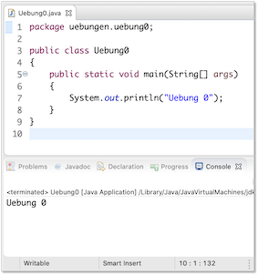

Übungen¶
Übungsbl√§tter (wochenweise)¶
Übung 0
- Installieren Sie sich - falls noch nicht geschehen - eine Java-Entwicklungsumgebung (siehe Java).
- Installieren Sie sich die IDE Ihrer Wahl (siehe IDE). In den Vorlesungen und Übungen verwende ich Eclipse und beschreibe die Schritte auch für Eclipse.
- Starten Sie Eclipse durch Doppelklick auf das Programmsymbol.
- Erstellen Sie einen Workspace (Arbeitsbereich) in einem gewuÃànschten Ordner (z. B.
Prog12) im Dateisystem. Achten Sie darauf, dass Sie Schreibrechte in diesem Ordner besitzen. - Anlegen eines Projektordners:
- Auswahl im Menü
File-->New-->Java Project. - Eingabe des
Project name:Name des Projektes (z.B.WiSe22). Klicken auf den ButtonFinish. - Das Fenster
New module-info.javakönnen Sie einfach mitCreatebestätigen.
- Auswahl im Menü
- Erstellen eines neuen Packages (Paketes):
- Öffnen der Projektmappe im
Package Explorer. - Auswahl des Ordners
srcmit der rechten Maustaste. - Auswahl des Menüpunktes
New --> Package. - Geben Sie folgenden Paketnamen ein (Paketnamen werden kleingeschrieben)
uebungen.uebung0(Achten Sie auf den Punkt und dass Sie alles zusammen schreiben).
- Öffnen der Projektmappe im
- Erstellen einer neuen Klasse:
- Öffnen der Projektmappe im Package Explorer.
- Auswahl des Paketes (
uebungen.uebung0) mit der rechten Maustaste. - Auswahl des MenuÃàpunktes
New --> Class. - Eingabe des Namens, der gleichzeitig der Klassen- und Dateiname ist:
Uebung0. Klassennamen werden immer groß geschrieben. - Setzen des Häkchens bei
public static void main(). (Sollten Sie vergessen haben, das Häkchen zu setzen, dann ist die Klasse, nachdem SieFinishgedrückt haben, leer. Setzen Sie dann den Cursor zwischen die beiden geschweiften Klammern{ }, geben dannmainein und drücken die Ctrl+Leer-Tasten und anschließend Enter. Dann erscheint diemain()-Methode) - Klicken auf den Button
Finish.
- In die
main()-Methode (zwischen die geschweiften Klammern{und}geben Sie ein:System.out.println("Uebung 0"));. - Drücken Sie dann entweder auf den
 -Button oder wählen Sie aus dem Menü
-Button oder wählen Sie aus dem Menü Run --> Runoder drücken Sie shift+command+f11. In derConsolein Ihrer IDE (in Eclipse unten) erscheintUebung 0.
package uebungen.uebung0;
public class Uebung0
{
public static void main(String[] args)
{
System.out.println("Uebung 0");
}
}

Success
Fertig! Ihre Entwicklungsumgebung ist bereit! Wir können loslegen. 
Übung 1
- Erstellen Sie ein package
uebungen.uebung1. - Erstellen Sie in diesem package eine Klasse
Uebung1mitmain()-Methode. - Deklarieren und initialisieren Sie in der
main()-Methode jeweils eine Variable mit dem Datentypint,long,char,byte,short,float,double,booleanundString. Geben Sie alle Werte einzeln durch Aufruf derprintln()-Methode aus. Erzeugen Sie dabei folgende Ausgabe (Werte nur Beispiele):Wert vom Typ int : 123 Wert vom Typ long : 456789 Wert vom Typ char : a Wert vom Typ byte : 127 Wert vom Typ short : 32767 Wert vom Typ float : 4.23 Wert vom Typ double : 6.98 Wert vom Typ boolean : true Wert vom Typ String : Hallo! - Setzen Sie den Wert Ihrer
int-Variablen auf2147483647. Geben Sie den Wert auf der Konsole aus, z.B.:
Erhöhen Sie nun den Wert der Variablen umWert von i : 21474836471und geben Sie den Wert erneut aus. Was passiert? Warum? - Wiederholen Sie das gleiche mit einer
long-Variablen. - Weisen Sie Ihrer
char-Variablen den Wert65zu. Geben Sie den Wert Ihrerchar-Variablen aus. Was passiert? Warum? -
Gegeben ist die folgende Klasse:
public class PrinterClass { public static void main(String[] args) { System.out.print("answer="); System.out.println(40 + 2); } }Was wird auf der Konsole ausgegeben?
a)b)answer=42c)answer= 42answer = 42 -
Betrachten Sie folgenden Pseudocode:
cake prices are 1.0 and 2.0 for each item if cake price is even print "even" else print "uneven"Welche Bedeutungen haben die Einrückungen? Was wird ausgegeben?
a)b)evenc)unevend)even, unevenuneven, even -
Betrachten Sie folgenden Pseudocode:
n = 3 while n > 1 print n n = n – 1Welche Bedeutungen haben die Einrückungen? Was wird ausgegeben?
a)b)3c)3,23,2,1 -
Führen Sie folgende Übungen mit 8 Stellen durch:
- Rechnen Sie
126in eine Binärzahl um.
- Rechnen Sie
-
Rechnen Sie
-126in eine Binärzahl um. - Addieren Sie
00001010und00001100. - Subtrahieren Sie
00001010und00001100.
Eine mögliche Lösung für Übung1
package uebungen.uebung1;
public class Uebung1
{
public static void main(String[] args)
{
int in = 123;
long lo = 456789;
char ch = 'a';
byte by = 127;
short sh = 32767;
float fl = 4.23f;
double d1 = 6.98;
boolean b1 = true;
String s1 = "Hallo!";
System.out.println(" --- Aufgabe 3 -------");
System.out.println();
System.out.println("Wert vom Typ int : " + in );
System.out.println("Wert vom Typ long : " + lo );
System.out.println("Wert vom Typ char : " + ch );
System.out.println("Wert vom Typ byte : " + by );
System.out.println("Wert vom Typ short : " + sh );
System.out.println("Wert vom Typ float : " + fl );
System.out.println("Wert vom Typ double : " + d1 );
System.out.println("Wert vom Typ boolean : " + b1 );
System.out.println("Wert vom Typ String : " + s1 );
System.out.println();
System.out.println(" --- Aufgabe 4 -------");
System.out.println();
in = 2147483647;
System.out.println("Wert vom Typ int : " + in );
in = in + 1; // in++;
System.out.println("Wert vom Typ int : " + in );
System.out.println();
System.out.println(" --- Aufgabe 5 -------");
System.out.println();
lo = 2147483647L; // L am Ende des Wertes beachten
System.out.println("Wert vom Typ long : " + lo );
lo = lo +1 ;
System.out.println("Wert vom Typ long : " + lo );
System.out.println();
System.out.println(" --- Aufgabe 6 -------");
System.out.println();
ch = 65;
System.out.println("Wert vom Typ char : " + ch );
// 7 a)
// 8 d)
// 9 b)
// 126 --> 0111 1110
// -126 --> 1000 0010
// 0000 1010 + 0000 1100 = 0001 0110 ( 10 + 12 = 22 )
// 0000 1010 - 0000 1100 = 0000 1010 + 1111 0100 = 1111 1110 ( 10 - 12 = -2 )
}
}
Übung 2
- Erstellen Sie ein package
uebungen.uebung2. - Erstellen Sie in diesem package eine Klasse
Uebung2mitmain()-Methode. -
Schreiben Sie eine Methode
Diese Methode soll folgende Ausgabe auf die Konsole erzeugen, z.B. fürpublic static void printIntDivision(int nr1, int nr2) { }printIntDivision(7, 4);die Ausgabez.B. für7 geteilt durch 4 ergibt 1. Es bleibt ein Rest von 3printIntDivision(17, 4);die Ausgabe17 geteilt durch 4 ergibt 4. Es bleibt ein Rest von 1Rufen Sie die Methode entsprechend in der
main()-Methode auf! -
Schreiben Sie zwei Methoden
Deklarieren Sie in der main()-Methode zwei int-Variablen und weisen Sie diesen Werte zu (z.B.public static int getQuotient(int nr1, int nr2) {} // und public static int getRemainder(int nr1, int nr2) {}17und4). Wenden Sie die beiden Methoden so an, dass mit Hilfe derprintln()-Methode folgende Ausgaben erscheinen:17/4 = 4 17 mod 4 = 1 -
Besitzen die folgende Methodenaufrufe einem Wert? Wenn ja, welcher?
printIntDivision(17, 4);
-
getQuotient(17,4); -
getRemainder(17,4); -
Können wir die Methoden
getQuotient(int nr1, int nr2)undgetRemainder(int nr1, int nr2)auch in derprintIntDivision(int nr1, int nr2)-Methode verwenden/aufrufen? Wenn ja, wie?
Eine mögliche Lösung für Übung 2
package uebungen.uebung2;
public class Uebung2
{
public static void printIntDivision(int nr1, int nr2)
{
//int quotient = nr1 / nr2;
int quotient = getQuotient(nr1, nr2);
//int remainder = nr1 % nr2;
int remainder = getRemainder(nr1, nr2);
System.out.println(nr1 + " geteilt "
+ "durch " + nr2
+ " ergibt " + quotient + ". "
+ "Es bleibt ein Rest "
+ "von " + remainder);
}
public static int getQuotient(int nr1, int nr2)
{
int quotient = nr1 / nr2;
return quotient;
}
public static int getRemainder(int nr1, int nr2)
{
int remainder = nr1 % nr2;
return remainder;
}
public static void main(String[] args)
{
printIntDivision(7,4);
printIntDivision(17,4);
int number1 = 17;
int number2 = 4;
int result = getQuotient(number1, number2);
int rest = getRemainder(number1, number2);
System.out.println(number1 + "/"
+ number2 + " = "
+ result);
System.out.println(number1 + " mod "
+ number2 + " = "
+ rest);
}
}
Übung 3
- Erstellen Sie ein package
uebungen.uebung3. - Erstellen Sie in diesem package eine Klasse
Uebung3mitmain()-Methode. -
Schreiben Sie eine Methode
public static void printTimesTables(int nr1, int nr2). Bei Aufruf der Methode z.B. fürprintTimesTables(10,10);soll das kleine Ein-Mal-Eins in der folgenden Form ausgegeben werden:Ausgabe für printTimesTables(10,10);
1 * 1 = 1 1 * 2 = 2 1 * 3 = 3 1 * 4 = 4 1 * 5 = 5 1 * 6 = 6 1 * 7 = 7 1 * 8 = 8 1 * 9 = 9 1 * 10 = 10 2 * 1 = 2 2 * 2 = 4 2 * 3 = 6 2 * 4 = 8 2 * 5 = 10 2 * 6 = 12 2 * 7 = 14 2 * 8 = 16 2 * 9 = 18 2 * 10 = 20 3 * 1 = 3 3 * 2 = 6 3 * 3 = 9 3 * 4 = 12 3 * 5 = 15 3 * 6 = 18 3 * 7 = 21 3 * 8 = 24 3 * 9 = 27 3 * 10 = 30 4 * 1 = 4 4 * 2 = 8 4 * 3 = 12 4 * 4 = 16 4 * 5 = 20 4 * 6 = 24 4 * 7 = 28 4 * 8 = 32 4 * 9 = 36 4 * 10 = 40 5 * 1 = 5 5 * 2 = 10 5 * 3 = 15 5 * 4 = 20 5 * 5 = 25 5 * 6 = 30 5 * 7 = 35 5 * 8 = 40 5 * 9 = 45 5 * 10 = 50 6 * 1 = 6 6 * 2 = 12 6 * 3 = 18 6 * 4 = 24 6 * 5 = 30 6 * 6 = 36 6 * 7 = 42 6 * 8 = 48 6 * 9 = 54 6 * 10 = 60 7 * 1 = 7 7 * 2 = 14 7 * 3 = 21 7 * 4 = 28 7 * 5 = 35 7 * 6 = 42 7 * 7 = 49 7 * 8 = 56 7 * 9 = 63 7 * 10 = 70 8 * 1 = 8 8 * 2 = 16 8 * 3 = 24 8 * 4 = 32 8 * 5 = 40 8 * 6 = 48 8 * 7 = 56 8 * 8 = 64 8 * 9 = 72 8 * 10 = 80 9 * 1 = 9 9 * 2 = 18 9 * 3 = 27 9 * 4 = 36 9 * 5 = 45 9 * 6 = 54 9 * 7 = 63 9 * 8 = 72 9 * 9 = 81 9 * 10 = 90 10 * 1 = 10 10 * 2 = 20 10 * 3 = 30 10 * 4 = 40 10 * 5 = 50 10 * 6 = 60 10 * 7 = 70 10 * 8 = 80 10 * 9 = 90 10 * 10 = 100 -
Schreiben Sie eine Methode
public static void printTimesMatrix(int nr1, int nr2). Bei Aufruf der Methode z.B. für printTimesMatrix(10,10) soll das kleine Ein-Mal-Eins in der folgenden Form ausgegeben werden:Ausgabe für printTimesMatrix(10,10);
1 2 3 4 5 6 7 8 9 10 2 4 6 8 10 12 14 16 18 20 3 6 9 12 15 18 21 24 27 30 4 8 12 16 20 24 28 32 36 40 5 10 15 20 25 30 35 40 45 50 6 12 18 24 30 36 42 48 54 60 7 14 21 28 35 42 49 56 63 70 8 16 24 32 40 48 56 64 72 80 9 18 27 36 45 54 63 72 81 90 10 20 30 40 50 60 70 80 90 100 -
Schreiben Sie eine Methode
public static void printTriangleUp(int height). Bei Aufruf der Methode z.B. fürprintTriangleUp(7)soll folgende Ausgabe erscheinen:******* ****** ***** **** *** ** * -
Geben Sie alle möglichen Kombinationen für 3 ganze Zahlen
x,yundzaus, für die gilt:x <= y <= z und x * y * z = 36
Genügt bis hierher. Ab hier Zusatz nur für diejenigen, die bereits früher fertig sind.
-
Zusatz Schreiben Sie eine Umrechnung für eine gegebene Anzahl von Sekunden (
printSeconds(int seconds)), z.B.printSeconds(3456789):Aber z.B.3456789 Sekunden sind 40 Tage, 13 Minuten, 9 Sekunden.printSeconds(2345678):Aber z.B.2345678 Sekunden sind 27 Tage, 3 Stunden, 34 Minuten, 38 Sekunden.printSeconds(123456):Aber z.B.123456 Sekunden sind 1 Tag, 10 Stunden, 17 Minuten, 36 Sekunden.printSeconds(12345):12345 Sekunden sind 3 Stunden, 25 Minuten, 45 Sekunden. - Zusatz Schreiben Sie eine Methode, die für eine natürliche Zahl deren Quersumme ausgibt, z.B.:
crossSum(12345678)Die Quersumme von 12345678 ist 36.
Eine mögliche Lösung für Übung 3
package uebungen.uebung3;
public class Uebung3
{
public static void printTimesTables(int nr1, int nr2)
{
for (int i = 1; i <= nr1; i++)
{
for(int j = 1; j <= nr2; j++)
{
// System.out.println(" i = " + i + ", j = " + j);
int product = i * j;
System.out.println(i + " * " + j + " = " + product);
}
System.out.println();
}
}
public static void printTimesMatrix(int nr1, int nr2)
{
for (int i = 1; i <= nr1; i++)
{
for(int j = 1; j <= nr2; j++)
{
System.out.print(" i = " + i + ", j = " + j + " ");
int product = i * j;
System.out.print(product + " ");
}
System.out.println();
}
}
public static void printTriangleUp(int height)
{
for(int row = 0; row < height; row++)
{
// System.out.print("Zeile " + row + " : ");
for(int nrOfStars = 0; nrOfStars < (height - row); nrOfStars++)
{
// System.out.print(nrOfStars + " ");
System.out.print("* ");
}
// System.out.println(" <- Ende Zeile " + row);
System.out.println();
}
}
public static void printXYZ()
{
for(int x = -36; x <= 36; x++)
{
for(int y = x; y <= 36; y++)
{
for(int z = y; z <= 36; z++)
{
if(x * y * z == 36)
{
System.out.println("x=" + x + ", y=" + y + ", z= " + z);
}
}
}
}
}
public static void main(String[] args)
{
System.out.println();
System.out.println("---------------- Aufgabe 3 --------------");
System.out.println();
printTimesTables(10,10);
System.out.println();
System.out.println("---------------- Aufgabe 4 --------------");
System.out.println();
printTimesMatrix(10,10);
System.out.println();
System.out.println("---------------- Aufgabe 5 --------------");
System.out.println();
printTriangleUp(7);
System.out.println();
System.out.println("---------------- Aufgabe 6 --------------");
System.out.println();
printXYZ();
}
}
Übung 4
- Erstellen Sie ein package
uebungen.uebung4. - Erstellen Sie in diesem package eine Klasse
Uebung4mitmain()-Methode. - Implementieren Sie folgende Methoden:
public static int inputInt()– in dieser Methode wird über die Konsole eineint-Zahl eingelesen. Diese Zahl wird von der Methode zurückgegeben. Zur Eingabe von Zahlen über die Konsole siehe Klasse Scanner.public static boolean isPrime(int number)– diese Methode prüft, ob die als Parameter übergebenenumbereine Primzahl ist. Die Methode gibt eintruezurück, wennnumbereine Primzahl ist undfalsesonst.public static void printPrimeNumbers(int maximum)– diese Methode gibt alle Primzahlen von 1 bis einschließlichmaximumwie folgt auf der Konsole aus (Bsp. fürmaximum=61):d.h. es werden die Zahlen, die Primzahlen sind, ausgegeben und für die anderen Zahlen erscheint nur ein Punkt. Verwenden Sie in der MethodeZahl : 61 .2 3 .5 .7 ...11 .13 ...17 .19 ...23 .....29 .31 .....37 ...41 .43 ...47 .....53 .....59 .61printPrimenumbers(int)die MethodeisPrime(int).public static int getSmallestDivider(int number)– diese Methode gibt den kleinsten Teiler zurück, dernumberganzzahlig teilt. Istnumbereine Primzahl, wirdnumberzurückgegeben. Für den Fall, dassnumberkleiner als2ist, geben Sie ebenfallsnumberzurück.public static String createStringOfPrimeFactorization(int number)– diese Methode gibt einen String in folgender Form zurück (Bsp. fürnumber=632060):d.h. alle kleinsten Teiler werden mit dem Multiplikationszeichen verbunden und am Ende erscheint" 2 * 2 * 5 * 11 * 13 * 13 * 17 = 632060 "= Wert von number.- Testen Sie alle Methoden. Rufen Sie insbesondere
inputInt(),printPrimenumbers(int)undcreateStringOfPrimeFactorization(int)in dermain()-Methode auf.
- Tipp: Bei der Überprüfung, ob
numbereine Primzahl ist, genügt es, Teiler bis zur Wurzel vonnumberzu suchen. Werden bis dahin keine Teiler gefunden, istnumbereine Primzahl. Sie können sich dazu z.B. eine Variable der Formint bound = (int) Math.sqrt(number);erstellen und müssen dann den Teiler nur bisboundsuchen (der Typkonvertierungsoperator(int)macht aus derdouble-Zahl einenint- schneidet die Nachkommastellen ab).
Eine mögliche Lösung für Übung 4
package uebungen.uebung4;
import java.util.Scanner;
public class Uebung4
{
public static int inputInt()
{
Scanner sc = new Scanner(System.in);
System.out.print("Geben Sie eine Zahl ein : ");
int number = sc.nextInt();
sc.close();
return number;
}
/*
* in der Methode wird <code>isPrime</code> verwendet, um nur ein <code>return</code> am
* Ende der Methode zu realisieren. Man könnte auch statt <code>isPrime = false;</code>
* jeweils <code>return false;</code> bzw. statt <code>isPrime = true;</code>
* <code>return true;</code> schreiben und bräuchte dann weder <code>isPrime</code> noch
* die jeweiligen <code>else</code>-Zweige.
*/
public static boolean isPrime(int number)
{
boolean isPrime = true; // true ist wichtig!
if(number<2)
{
isPrime = false;
}
else
{
if(number==2)
{
isPrime=true;
}
else
{
for(int divider=2; divider<=Math.sqrt(number) && isPrime; divider++)
{
if(number % divider == 0)
{
isPrime = false;
}
}
}
}
return isPrime;
}
public static void printPrimeNumbers(int maximum)
{
for(int number=1; number<=maximum; number++)
{
if(isPrime(number))
{
System.out.print(number+" ");
}
else
{
System.out.print(". ");
}
if(number%30 == 0)
{
System.out.println();
}
}
}
/*
* in der Methode wird <code>found</code> verwendet, um nur ein <code>return</code> am
* Ende der Methode zu realisieren. Man könnte auch statt <code>smallestDivider = number;</code>
* jeweils <code>return number;</code> bzw. statt <code>smallestDivider = divider;</code>
* <code>return divider;</code> schreiben und bräuchte dann weder <code>found</code> noch
* die jeweiligen <code>else</code>-Zweige.
*/
public static int getSmallestDivider(int number)
{
int smallestDivider = 0;
boolean found = false;
if(number<2)
{
smallestDivider = number;
}
else
{
if(isPrime(number))
{
smallestDivider = number;
}
else
{
for(int divider=2; divider<number && !found; divider++)
{
if(number % divider == 0)
{
smallestDivider = divider;
found = true;
}
}
}
}
return smallestDivider;
}
public static String createStringOfPrimeFactorization(int number)
{
String s = "";
/*
* 2 * 2 * 5 * 11 * 13 * 13 * 17 = 632060
* 632060 --> 2
* 316030 --> 2
* 158015 --> 5
* ... --> divider
* result/divider == 1
*/
int smallestDivider = getSmallestDivider(number);
s = s + smallestDivider;
int result = number/smallestDivider;
while(result > 1)
{
smallestDivider = getSmallestDivider(result);
s = s + " * " + smallestDivider;
result = result/smallestDivider;
}
s = s + " = " + number;
return s;
}
public static void main(String[] args)
{
System.out.printf("%n%n----------- Aufgabe 1 ------------ %n %n");
int number = inputInt();
System.out.println("Sie haben " + number + " eingegeben.");
System.out.printf("%n%n----------- Aufgabe 2 ------------ %n %n");
System.out.println(isPrime(number));
System.out.printf("%n%n----------- Aufgabe 3 ------------ %n %n");
printPrimeNumbers(number);
System.out.printf("%n%n----------- Aufgabe 4 ------------ %n %n");
System.out.println(getSmallestDivider(number));
System.out.printf("%n%n----------- Aufgabe 5 ------------ %n %n");
String output = createStringOfPrimeFactorization(632060);
System.out.println(output);
}
}
Übung 5
- Erstellen Sie ein package
uebungen.uebung5. - Erstellen Sie in diesem package eine Klasse
Konto(ohnemain()-Methode!) - Erstellen Sie in diesem package eine Klasse
Testklassemitmain()-Methode - Erstellen Sie in der Klasse
Kontozwei Objektvariablenguthabenvom Typdouble→ nur in der Klasse sichtbar!pinvom Typint→ ebenfalls nur in der Klasse sichtbar!
- Erstellen Sie in der Klasse
Kontoeinen Konstruktor fürKonto- diesem Konstruktor wird als Parameter
int pPinübergeben - mit dem Wert des Parameters wird innerhalb des Konstruktors der Wert von
pininitialisiert - Initialisieren Sie im Konstruktor auch die Objektvariable
guthaben. Sie bekommt den Wert0.0(hierfür haben wir also keinen Parameter, wir setzen den initialen Wert einfach generell auf0.0)
- diesem Konstruktor wird als Parameter
- Erstellen Sie in der Klasse
Kontoeine Objektmethodeeinzahlen(double betrag)- diese Objektmethode ist
publicund gibt nichts zurück - in dieser Methode wird der Wert der Objektvariablen
guthabenum den Wert vonbetragerhöht - erzeugen Sie in dieser Methode außerdem eine Ausgabe in der Form:
falls der
Es wurden 100,00 Euro eingezahlt.betragden Wert100.0hatte. Verwenden Sie am besten dieprintf()-Methode, um stets genau 2 Stellen nach dem Komma des Betrages auszugeben (siehe hier).
- diese Objektmethode ist
- Geben Sie in der
main()-Methode derTestklasseein:und führen Sie dieKonto k1 = new Konto(1234); k1.einzahlen(100.0); k1.einzahlen(50.0); k1.einzahlen(150.0);Testklasseaus. Es sollten folgende Ausgaben erzeugt werden:Es wurden 100,00 Euro eingezahlt. Es wurden 50,00 Euro eingezahlt. Es wurden 150,00 Euro eingezahlt. - Erstellen Sie in der Klasse
Kontoeine Objektmethodekontoauszug(int pPin)- diese Objektmethode ist
publicund gibt nichts zurück - einen
kontoauszug(int pPin)können Sie nur "ziehen", wenn der Parameterwert vonpPinmit dem Wert der Objektvariablenpinübereinstimmt - wird der richtige Wert für die
pinübergeben, geben Sie dasguthabenin der folgenden Form aus:fallsIhr aktuelles Guthaben betraegt 300,00 Euro.guthabenden Wert von300.0hat. - wird ein falscher Wert für die
pinübergeben, geben Sie folgende Ausgabe aus:Falsche PIN!
- diese Objektmethode ist
- Erweitern Sie die
main()-Methode der Testklasse um folgende Anweisungen:und führen Sie diek1.kontoauszug(1235); // Falsche PIN! k1.kontoauszug(1234);Testklasseaus. Es sollten folgende (weitere) Ausgaben erzeugt werden:Falsche PIN! Ihr aktuelles Guthaben betraegt 300,00 Euro. - Erstellen Sie in der Klasse
Kontoeine Objektmethodeauszahlen(int pPin, double betrag)- diese Objektmethode ist
publicund gibt nichts zurück - es kann nur etwas ausgezahlt werden, wenn der Parameterwert von
pPinmit dem Wert der Objektvariablenpinübereinstimmt - stimmen die Werte nicht überein, geben Sie erneut
aus.
Falsche PIN! - stimmt der
pin-Wert, dann müssen Sie prüfen, ob dasguthabenreicht, umbetragauszuzahlen. Ist nicht genugguthabenvorhanden, dann geben Sie ausfallsIhr Guthaben reicht nicht, um 400,00 Euro auszuzahlen.betragden Wert400.0hatte. - wenn der
pin-Wert stimmt und genugguthabenvorhanden ist, um denbetragauszuzahlen, dann reduzieren Sieguthabenum den entsprechendenbetragund geben ausfalls derEs wurden 100,00 Euro ausgezahlt.betragden Wert100.0hatte.
- diese Objektmethode ist
- Erweitern Sie die
main()-Methode der Testklasse um folgende Anweisungen:und führen Sie diek1.auszahlen(1235, 100.0); // Falsche PIN! k1.auszahlen(1234, 100.0); k1.kontoauszug(1234); k1.auszahlen(1234, 300.0); // Guthaben reicht nicht k1.auszahlen(1234, 200.0); k1.kontoauszug(1234);Testklasseaus. Es sollten folgende (weitere) Ausgaben erzeugt werden:Falsche PIN! Es wurden 100,00 Euro ausgezahlt. Ihr aktuelles Guthaben betraegt 200,00 Euro. Ihr Guthaben reicht nicht, um 300,00 Euro auszuzahlen. Es wurden 200,00 Euro ausgezahlt. Ihr aktuelles Guthaben betraegt 0,00 Euro. - Zusatz:
- Erweitern Sie die Klasse um eine weitere Objektvariable
private double dispogrenze - Initialisieren Sie diese Variable innerhalb des Konstruktors (ohne weiteren Parmeter) auf den Wert
-1000.0. Sie dürfen somit Ihr Konto um1000.00 Euroüberziehen. - Passen Sie die
auszahlen()-Methode entsprechend an, so dass es auch möglich ist, einenbetragauszuzahlen, so lange man nicht unter diedispogrenzefällt. - Erstellen Sie eine Methode
public void zinsenZahlen().- Erstellen Sie in dieser Methode zwei Konstanten
DISPOZINSENvom Typdoublebekommt den Wert12.0(soll12%entsprechen) undGUTHABENZINSENvom Typdoublebekommt den Wert0.5(soll0.5%entsprechen)
- Berechnen Sie innerhalb der Methode die Zinsen für das Konto
DISPOZINSENwerden fällig (werden vonguthabenabgezogen), fallsguthabennegativ istGUTHABENZINSENwerden gewährt (werden zuguthabenaddiert), fallsguthabenpositiv ist- passen Sie den Wert von
guthabenentsprechend an - erzeugen Sie entsprechende Ausgaben, z.B.
bzw.
Ihnen wurden 18,00 Euro Zinsen abgebucht.Ihnen wurden 4,16 Euro Zinsen gutgeschrieben.
- Erstellen Sie in dieser Methode zwei Konstanten
- Angenommen, die gesamte
main()-Methode sieht jetzt so aus:dann sollten Sie folgende Ausgabe erzeugen (gilt nur für Zusatz!):public static void main(String[] args) { Konto k1 = new Konto(1234); k1.einzahlen(100.0); k1.einzahlen(50.0); k1.einzahlen(150.0); k1.kontoauszug(1235); // Falsche PIN! k1.kontoauszug(1234); k1.auszahlen(1235, 100.0); // Falsche PIN! k1.auszahlen(1234, 100.0); k1.kontoauszug(1234); k1.auszahlen(1234, 300.0); k1.auszahlen(1234, 200.0); k1.kontoauszug(1234); k1.einzahlen(150.0); k1.kontoauszug(1234); k1.zinsenZahlen(); k1.kontoauszug(1234); k1.einzahlen(1000.0); k1.kontoauszug(1234); k1.zinsenZahlen(); k1.kontoauszug(1234); }Es wurden 100,00 Euro eingezahlt. Es wurden 50,00 Euro eingezahlt. Es wurden 150,00 Euro eingezahlt. Falsche PIN! Ihr aktuelles Guthaben betraegt 300,00 Euro. Falsche PIN! Es wurden 100,00 Euro ausgezahlt. Ihr aktuelles Guthaben betraegt 200,00 Euro. Es wurden 300,00 Euro ausgezahlt. Es wurden 200,00 Euro ausgezahlt. Ihr aktuelles Guthaben betraegt -300,00 Euro. Es wurden 150,00 Euro eingezahlt. Ihr aktuelles Guthaben betraegt -150,00 Euro. Ihnen wurden 18,00 Euro Zinsen abgebucht. Ihr aktuelles Guthaben betraegt -168,00 Euro. Es wurden 1000,00 Euro eingezahlt. Ihr aktuelles Guthaben betraegt 832,00 Euro. Ihnen wurden 4,16 Euro Zinsen gutgeschrieben. Ihr aktuelles Guthaben betraegt 836,16 Euro.
- Erweitern Sie die Klasse um eine weitere Objektvariable
Eine mögliche Lösung für Übung 5
package uebungen.uebung5;
public class Konto
{
private double guthaben;
private int pin;
private double dispogrenze;
public Konto(int pPin)
{
guthaben = 0;
pin = pPin;
dispogrenze = -1000.0;
}
public void einzahlen(double betrag)
{
guthaben = guthaben + betrag;
System.out.printf("Es wurden %.2f Euro eingezahlt.%n", betrag);
}
public void auszahlen(int pPin, double betrag)
{
if(pin==pPin)
{
if(guthaben - dispogrenze >= betrag)
{
guthaben = guthaben - betrag;
System.out.printf("Es wurden %.2f Euro ausgezahlt.%n", betrag);
}
else
{
System.out.printf("Ihr Guthaben reicht nicht, um %.2f Euro auszuzahlen.%n", betrag);
}
}
else
{
System.out.println("Falsche PIN!");
}
}
public void kontoauszug(int pPin)
{
if(pin==pPin)
{
System.out.printf("Ihr aktuelles Guthaben betraegt %.2f Euro.%n", guthaben);
}
else
{
System.out.println("Falsche PIN!");
}
}
public void zinsenZahlen()
{
final double DISPOZINSEN = 12.0;
final double GUTHABENZINSEN = 0.5;
if(guthaben >0)
{
double zinsen = guthaben * GUTHABENZINSEN / 100.0;
guthaben = guthaben + zinsen;
System.out.printf("Ihnen wurden %.2f Euro Zinsen gutgeschrieben.%n", zinsen);
}
else
{
double zinsen = guthaben * DISPOZINSEN / 100.0; // ist negativ!
guthaben = guthaben + zinsen;
System.out.printf("Ihnen wurden %.2f Euro Zinsen abgebucht.%n", -zinsen);
}
}
}
package uebungen.uebung5;
public class Testklasse
{
public static void main(String[] args)
{
Konto k1 = new Konto(1234);
k1.einzahlen(100.0);
k1.einzahlen(50.0);
k1.einzahlen(150.0);
k1.kontoauszug(1235); // Falsche PIN!
k1.kontoauszug(1234);
k1.auszahlen(1235, 100.0); // Falsche PIN!
k1.auszahlen(1234, 100.0);
k1.kontoauszug(1234);
k1.auszahlen(1234, 300.0);
k1.auszahlen(1234, 200.0);
k1.kontoauszug(1234);
k1.einzahlen(150.0);
k1.kontoauszug(1234);
k1.zinsenZahlen();
k1.kontoauszug(1234);
k1.einzahlen(1000.0);
k1.kontoauszug(1234);
k1.zinsenZahlen();
k1.kontoauszug(1234);
}
}
Übung 6
- Erstellen Sie ein package
uebungen.uebung6. - Erstellen Sie in diesem package eine Klasse
Rectangle(ohnemain()-Methode!) - Erstellen Sie in diesem package eine Klasse
Testklassemitmain()-Methode - Erstellen Sie in der Klasse
Rectanglezwei Objektvariablenavom Typint→ nur in der Klasse sichtbar!bvom Typint→ ebenfalls nur in der Klasse sichtbar!aundbsollen die Seiten des Rechtecks sein.
- Implementieren Sie einen parameterlosen Konstruktor
Rectangle(), der für die Seiteaden Wert10und für die Seitebden Wert20setzt. - Implementieren Sie einen parametrisierten Konstruktor
Rectangle(int a, int b), der die Parameterwerte zum Initialisieren der Seiten verwendet. - Implementieren Sie eine Objektmethode
public int area(), die den Flächeninhalt des Rechtecks zurückgibt. - Implementieren Sie eine Objektmethode
public int perimeter(), die den Umfang des Rechtecks zurückgibt. - Implementieren Sie eine Objektmethode
public String toString(), die einenStringmit allen Informationen des Rechtecks in der folgenden Formzurückgibt.Rectangle : ( a=10, b=20, area=200, perimeter=60 ) - Implementieren Sie eine Objektmethode
public void print(), die den durchtoString()erzeugtenStringauf die Konsole ausgibt. - Geben Sie in der
main()-Methode derTestklasseein:und führen Sie die// Objekte erzeugen Rectangle r1 = new Rectangle(); Rectangle r2 = new Rectangle(12, 18); Rectangle r3 = new Rectangle(40, 5); Rectangle r4 = new Rectangle(20, 10); Rectangle r5 = new Rectangle(11, 21); System.out.printf("%n%n--------------- print()-Methode -----------------%n%n"); r1.print(); r2.print(); r3.print(); r4.print(); r5.print();Testklasseaus. Es sollten folgende Ausgaben erzeugt werden:--------------- print()-Methode ----------------- Rectangle : ( a=10, b=20, area=200, perimeter=60 ) Rectangle : ( a=12, b=18, area=216, perimeter=60 ) Rectangle : ( a=40, b= 5, area=200, perimeter=90 ) Rectangle : ( a=20, b=10, area=200, perimeter=60 ) Rectangle : ( a=11, b=21, area=231, perimeter=64 ) - Implementieren Sie eine Objektmethode
public boolean sidesAreEqual(Rectangle r), die eintruezurückgibt, wenn die Seiten des aufrufenden Objektes gleich den Seiten des Rectanglersind. Beachten Sie, dass das Rechteck auch gedreht noch gleiche Seiten haben soll, alsoa=10, b=20ist nicht nur mita=10, b=20gleich, sondern auch mita=20, b=10. Wenn die Seiten ungleich sind, gibt die Methode einfalsezurück. - Implementieren Sie eine Objektmethode
public boolean areasAreEqual(Rectangle r), die eintruezurückgibt, wenn die Flächeninhalte des aufrufenden Objektes und des Rectanglergleich sind. Ansonstenfalse. - Implementieren Sie eine Objektmethode
public boolean perimetersAreEqual(Rectangle r), die eintruezurückgibt, wenn die Umfänge des aufrufenden Objektes und des Rectanglergleich sind. Ansonstenfalse. - Implementieren Sie eine Objektmethode
public void printComparison(Rectangle r), die die Vergleiche mitrin der unten dargestellten Form ausgibt. Rufen Sie in der Methode die Methodenprint()(odertoString()),sidesAreEqual(),areasAreEqual()undperimetersAreEqual()auf. - Fügen Sie in der
main()-Methode derTestklassefolgende Anweisungen hinzu:und führen Sie dieSystem.out.printf("%n%n---------- printComparison()-Methode ------------%n%n"); r1.printComparison(r2); r1.printComparison(r3); r1.printComparison(r4); r1.printComparison(r5);Testklasseaus. Es sollten folgende zusätzliche Ausgaben erzeugt werden:---------- printComparison()-Methode ------------ this Rectangle : ( a=10, b=20, area=200, perimeter=60 ) the other Rectangle : ( a=12, b=18, area=216, perimeter=60 ) sides are not equal areas are not equal perimeters are equal this Rectangle : ( a=10, b=20, area=200, perimeter=60 ) the other Rectangle : ( a=40, b= 5, area=200, perimeter=90 ) sides are not equal areas are equal perimeters are not equal this Rectangle : ( a=10, b=20, area=200, perimeter=60 ) the other Rectangle : ( a=20, b=10, area=200, perimeter=60 ) sides are equal areas are equal perimeters are equal this Rectangle : ( a=10, b=20, area=200, perimeter=60 ) the other Rectangle : ( a=11, b=21, area=231, perimeter=64 ) sides are not equal areas are not equal perimeters are not equal -
- Implementieren Sie eine Objektmethode
public double diagonal(), die die Länge einer Diagonalen des Rechtecks zurückgibt. - Erweitern Sie die
toString()-Methode um die Ausgabe dieser Länge wie folgt:Rectangle : ( a=10, b=20, area=200, perimeter=60, diagonal=22,361 ) Rectangle : ( a=12, b=18, area=216, perimeter=60, diagonal=21,633 ) Rectangle : ( a=40, b= 5, area=200, perimeter=90, diagonal=40,311 ) Rectangle : ( a=20, b=10, area=200, perimeter=60, diagonal=22,361 ) Rectangle : ( a=11, b=21, area=231, perimeter=64, diagonal=23,707 )
Zusatz:
- Implementieren Sie eine Objektmethode
public void scale(int factor). Diese Methode "skaliert" (vergrößert oder verkleinert) das Rechteck um den Faktorfactor, genauer gesagt, wird der Flächeninhalt um diesen Faktor skaliert (vergrößert oder verkleinert). Die neuen Seiten sollen das gleiche Verhältnis zueinander haben, wie die alten Seiten. Geben Sie die neuen Seitenlängen in der folgenden Form auf die Konsole aus (siehe nächsten Punktmain()). - Fügen Sie in der
main()-Methode derTestklassefolgende Anweisungen hinzu:und führen Sie dieSystem.out.printf("%n%n--------------- scale()-Methode -----------------%n%n"); r1.scale(2); r2.scale(2); r3.scale(2); r4.scale(2); r5.scale(2); r1.scale(10); r2.scale(10); r3.scale(10); r4.scale(10); r5.scale(10);Testklasseaus. Es sollten folgende zusätzliche Ausgaben erzeugt werden:--------------- scale()-Methode ----------------- newArea= 400,00 newA= 14,14 newB= 28,28 check (newA*newB)= 400,00 newArea= 432,00 newA= 16,97 newB= 25,46 check (newA*newB)= 432,00 newArea= 400,00 newA= 56,57 newB= 7,07 check (newA*newB)= 400,00 newArea= 400,00 newA= 28,28 newB= 14,14 check (newA*newB)= 400,00 newArea= 462,00 newA= 15,56 newB= 29,70 check (newA*newB)= 462,00 newArea= 2000,00 newA= 31,62 newB= 63,25 check (newA*newB)=2000,00 newArea= 2160,00 newA= 37,95 newB= 56,92 check (newA*newB)=2160,00 newArea= 2000,00 newA=126,49 newB= 15,81 check (newA*newB)=2000,00 newArea= 2000,00 newA= 63,25 newB= 31,62 check (newA*newB)=2000,00 newArea= 2310,00 newA= 34,79 newB= 66,41 check (newA*newB)=2310,00
- Implementieren Sie eine Objektmethode